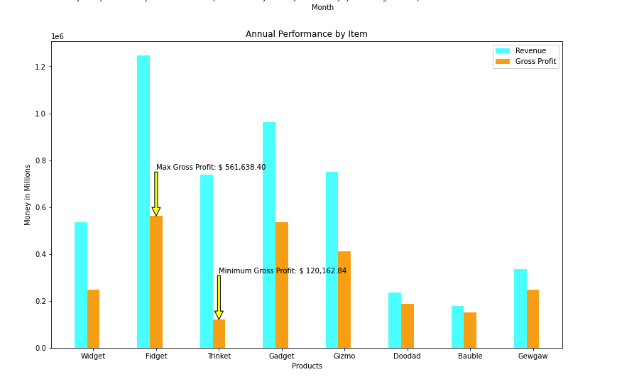
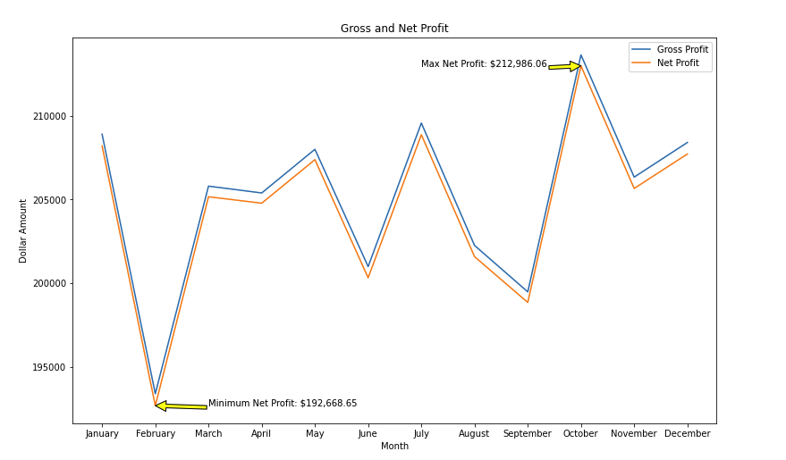
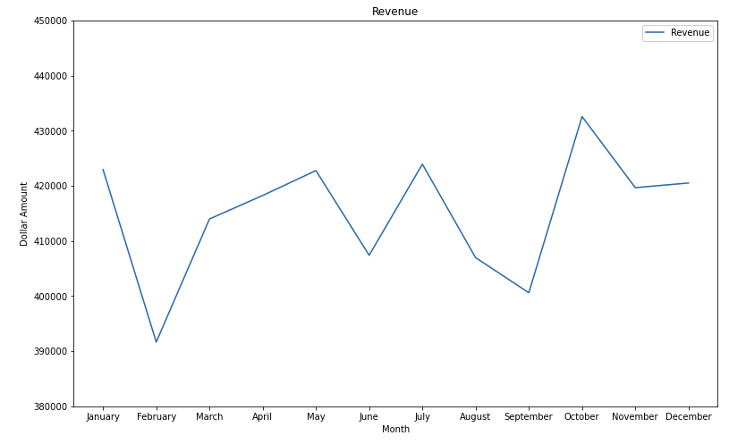
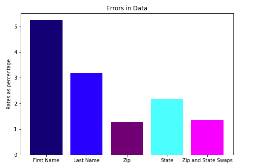

Sales Analysis Overview
This project from my data analysis class covers trends in product revenue and profit.
Key Objectives
The main objectives of the sales analysis project are to:
- Identify top-performing products
- Compare and contrast product revenue and profit.
- Identify most and least profitable months.
- View errors in customer data
Tools and Technologies
The project utilizes advanced analytics tools and technologies, including:
- Python
- Jupyter Notebook
- Pandas
Project Images



